Contents
Session Video
Introductions
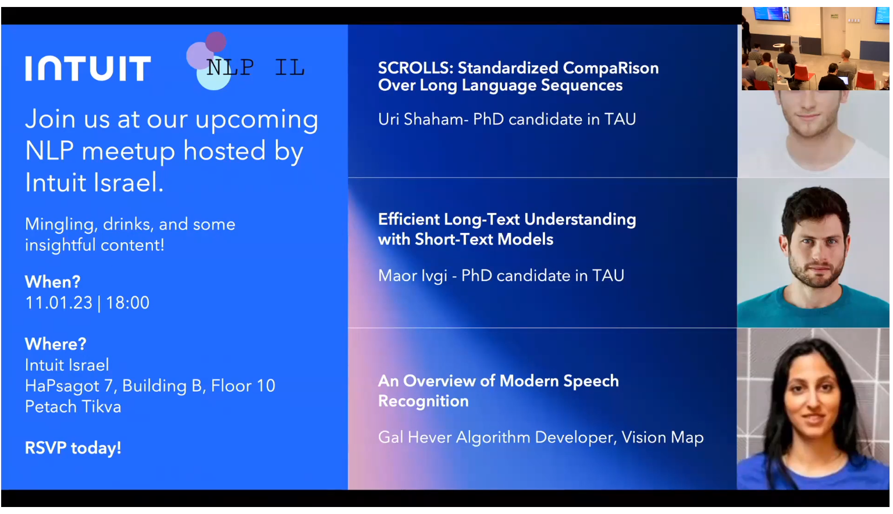 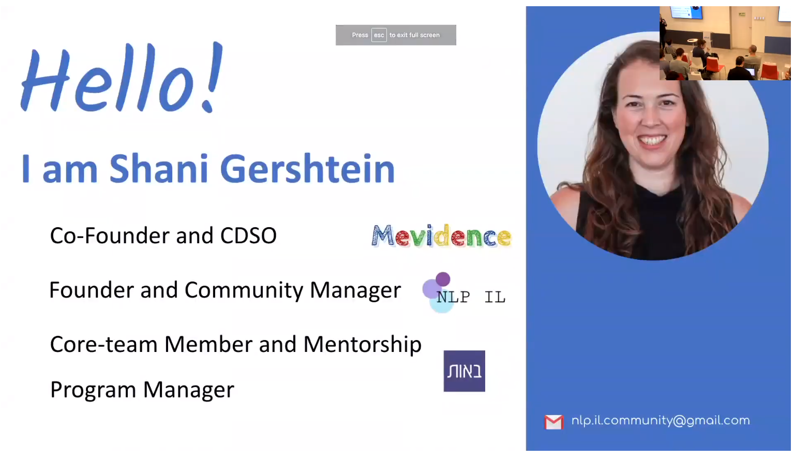 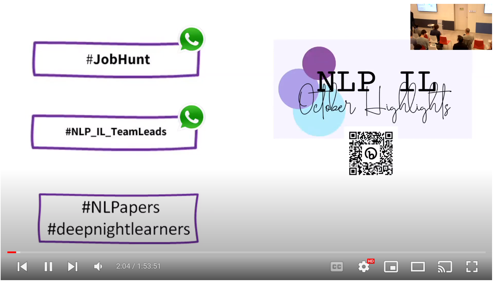 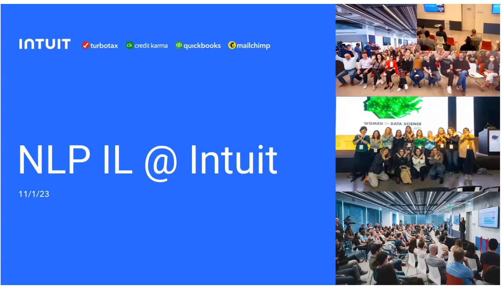 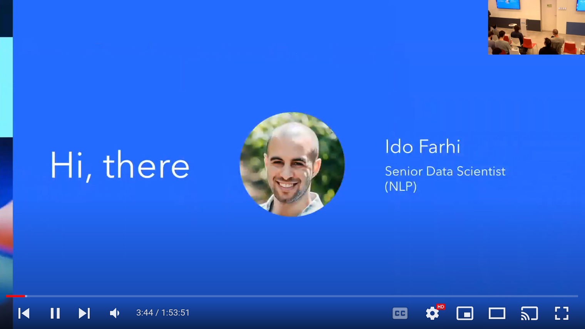 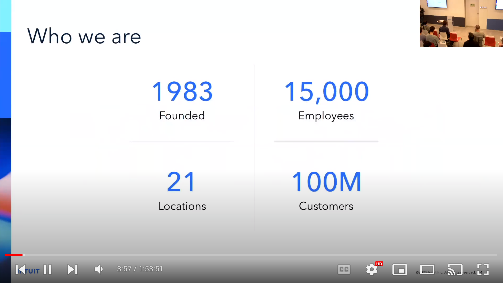 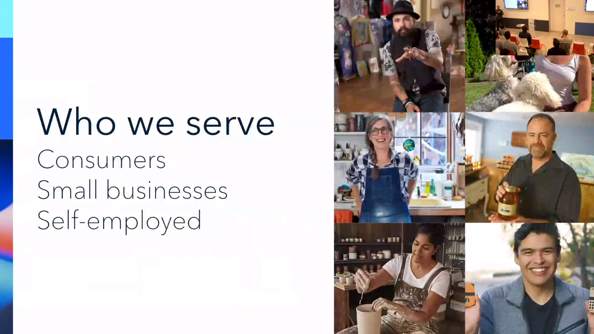
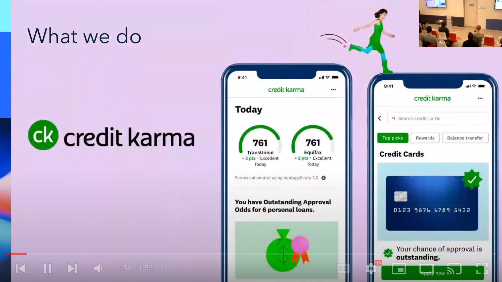 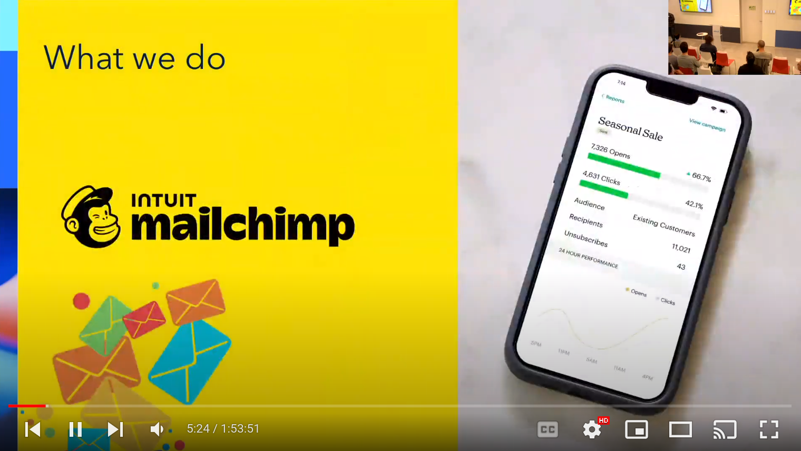 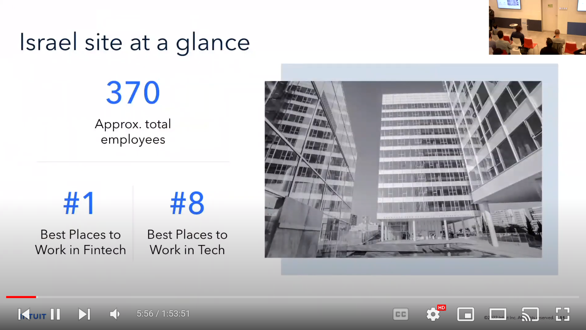 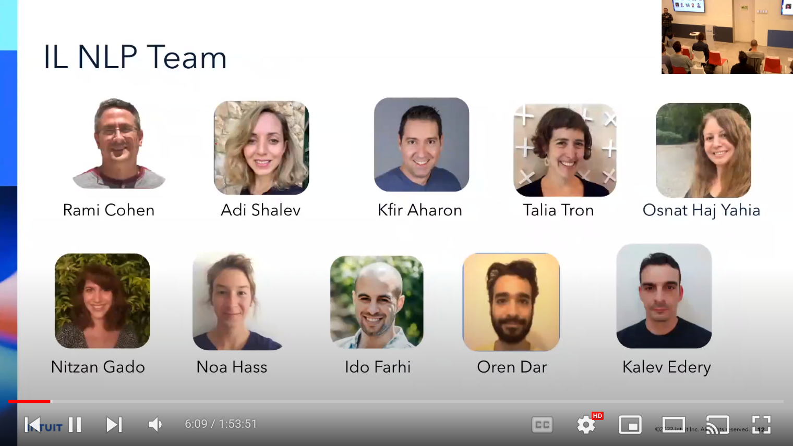 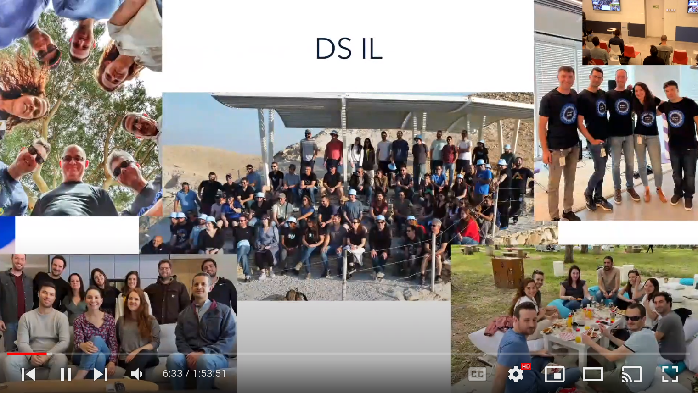
SCROLLS: Standardized CompaRison Over Long Language Sequences
Paper
Standardized CompaRison Over Long Language Sequences SCROLLS
Abstract
NLP benchmarks have largely focused on short texts, such as sentences and paragraphs, even though long texts comprise a considerable amount of natural language in the wild. We introduce SCROLLS, a suite of tasks that require reasoning over long texts. We examine existing long-text datasets, and handpick ones where the text is naturally long, while prioritizing tasks that involve synthesizing information across the input. SCROLLS contains summarization, question answering, and natural language inference tasks, covering multiple domains, including literature, science, business, and entertainment. Initial baselines, including Longformer Encoder-Decoder, indicate that there is ample room for improvement on SCROLLS. We make all datasets available in a unified text-to-text format and host a live leaderboard to facilitate research on model architecture and pretraining methods.
Speaker
Uri Shaham Uri_Shaham Page - PhD candidate in Tel Aviv university,
Uri is a Ph.D. student at the Tel Aviv University NLP lab, working with Omer Levy. His research focuses on conditional language generation, involving model architectures, inference algorithms, and evaluation benchmarks.
Slides


- Preplexity of next token prediction
- Urvashi Khandelwal, He He, Peng Qi, and Dan Jurafsky. 2018. Sharp nearby, fuzzy far away: How neural language models use context. In Proceedings of the 56th Annual Meeting of the Association for Computational Linguistics (Volume 1: Long Papers), pages 284–294, Melbourne, Australia. Association for Computational Linguistics.
- Urvashi Khandelwal, Omer Levy, Dan Jurafsky, Luke Zettlemoyer, and Mike Lewis. Generalization through Memorization: Nearest Neighbor Language Models. In International Conference on Learning Representations (ICLR), 2020b
- Simeng Sun, Kalpesh Krishna, Andrew MattarellaMicke, and Mohit Iyyer. 2021. Do long-range language models actually use long-range context? In Proceedings of the 2021 Conference on Empirical Methods in Natural Language Processing, pages 807–822, Online and Punta Cana, Dominican Republic. Association for Computational Linguistics.
- Ofir Press, Noah A. Smith, and Mike Lewis. 2021a. Shortformer: Better language modeling using shorter inputs. In Proceedings of the 59th Annual Meeting of the Association for Computational Linguistics and the 11th International Joint Conference on Natural Language Processing (Volume 1: Long Papers), pages 5493–5505, Online. Association for Computational Linguistics.


 ## Notes - Few comments about this talk. - Met with a company that worked on patents and had lots of issues with long range. - Most of the points rasied were ‘straw men’ so there is not much surprise.
## Notes - Few comments about this talk. - Met with a company that worked on patents and had lots of issues with long range. - Most of the points rasied were ‘straw men’ so there is not much surprise.
Efficient Long-Text Understanding with Short-Text Models
Paper
Efficient Long-Text Understanding with Short-Text Models ## Abstract: Transformer-based pretrained language models (LMs) are ubiquitous across natural language understanding, but cannot be applied to long sequences such as stories, scientific articles and long documents, due to their quadratic complexity. While a myriad of efficient transformer variants have been proposed, they are typically based on custom implementations that require expensive pretraining from scratch. In this work, we propose SLED: SLiding-Encoder and Decoder, a simple approach for processing long sequences that re-uses and leverages battle-tested short-text pretrained LMs. We find that SLED is competitive with specialized models that are up to 50x larger and require a dedicated and expensive pretraining step. ## Speaker - Maor Ivgi - PhD candidate in Tel Aviv university, - Maor is an NLP researcher and entrepreneur. He has vast experience in implementing state-of-the-art deep learning models for real-world use cases. He received his masters in Computer Science at Tel-Aviv University advised by Prof. Jonathan Berant, focusing on NLP models’ Robustness. As a Ph.D. candidate at Prof. Berant’s lab, his research is focused on long-range reasoning in large language models. ## Slides

 - NLP seems to have reached new level of maturity for use in Industry - c.f. Attetion is all you need - c.f. BERT pre-training of deep bidirectional transformers for language understanding
- NLP seems to have reached new level of maturity for use in Industry - c.f. Attetion is all you need - c.f. BERT pre-training of deep bidirectional transformers for language understanding 


 - Transformers have issues with long texts: - self attention is O(n^2) - cross attention is O(nk)
- Transformers have issues with long texts: - self attention is O(n^2) - cross attention is O(nk)  - Efficent LLM papers are: - Hard to understand, - Hard to generelize (due to platform specific engeneering tricks) - Expensive to reproduce - Inference run into Memory is an issue - Training is often on begining of document so does not see the end - Self Attention is has a limited window size.
- Efficent LLM papers are: - Hard to understand, - Hard to generelize (due to platform specific engeneering tricks) - Expensive to reproduce - Inference run into Memory is an issue - Training is often on begining of document so does not see the end - Self Attention is has a limited window size.

 - SLED’s Approch - Assume locality of information: “In an encoder-deocder architecture, the encoder can effectively contextualiza input tokens with local context only, leaving long range dependency to be handled by the decoder.” - Split text into short fixed length overlapping chunks of text (short contexts). - Prepend the
- SLED’s Approch - Assume locality of information: “In an encoder-deocder architecture, the encoder can effectively contextualiza input tokens with local context only, leaving long range dependency to be handled by the decoder.” - Split text into short fixed length overlapping chunks of text (short contexts). - Prepend the prefix/prompt to each chunk - The decoder will need to put it all together. 


 - this is a great slide! - it summerises lots of info - SLED’s Analysis - Contextual encoding is crucial - Cheating is not enough - The is real benefit in fusion
- this is a great slide! - it summerises lots of info - SLED’s Analysis - Contextual encoding is crucial - Cheating is not enough - The is real benefit in fusion 

 - what is cheeting?
- what is cheeting?

- Quantifing SLED’s benefits using relative improvement.
\text{Relative Improvement} = \frac{Score(SLED)-Score(Bart)}{Score(Bart)}


- Limits & Future Work
- Long outputs are still a constraint
- No explicit global contextualization
- No explicit globabl positional information
- No applicable for deocder-ony architecture
- (Corrective) pre-training is expected to help
 - Takeaways - Individual pieces of information are localized - Fusioin in decoder works - SLED does well on long range tasks.
- Takeaways - Individual pieces of information are localized - Fusioin in decoder works - SLED does well on long range tasks. 
- Main points They point out that the encoder can usually do a adequate job of understanding the input by looking at local context. Mostly a window with a few surrounding sentences. It uses this to create encode the input into a compact representation we call the state. The decoder will then be leverage the compression with “adaquate” encodings to efficently retrieve results from much longer contexts during inference on different tasks.
An Overview of Modern Speech Recognition
Abstract
Automatic speech recognition has been impacted by advances in related fields like image processing and natural language processing in recent years. One notable achievement in these areas has been the use of self-supervised learning to improve performance in computer vision and NLP tasks. This led to the development of the first self-supervised language model for speech representations, which has demonstrated impressive results in various NLP tasks. In this talk, we will review the key principles of automatic speech recognition and discuss the current progress, research, and challenges in the field ## Speaker - Gal Hever - Algorithm Developer, Vision Map - MSc in Data Science, with over a decade of accumulated expertise in Machine Learning & Data Analytics from 8200, academy, and industry. Deploying algorithms to production by applying data-driven Machine Learning & AI solutions end to end, starting from research to development and testing. ## Slides 


So not much to say: - I’ve read a couple of books on the subject, but this shows more up to date results. - Show me the papers? - The Data Nights course should be be worth taking
Citation
@online{bochman2012,
author = {Bochman, Oren},
date = {2012-11-01},
url = {https://orenbochman.github.io//posts/2023/2023-01-11-NLP-IL-Intuit Meetup/NLP-IL-Intuit-Meetup.html},
langid = {en}
}